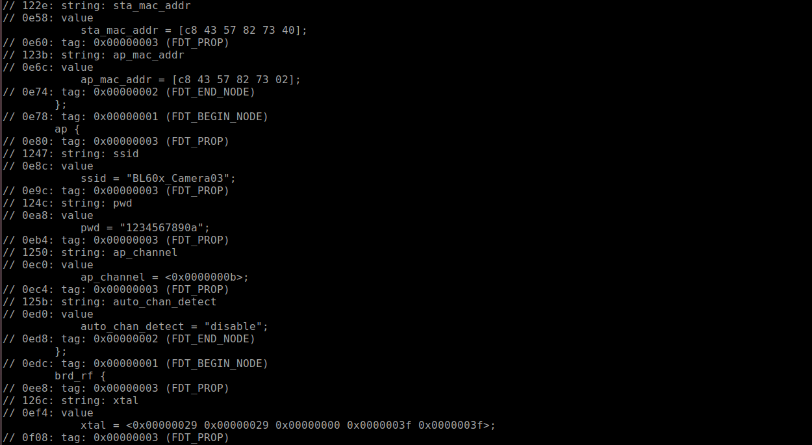

FDT
总览
本示例主要介绍如何从fdt文件中获取相关的配置。
使用步骤
- 编译
customer_app/sdk_app_fdt工程并下载对应的bin文件； - 使用
fdt命令将fdt文件中的wifi配置解析出来，并且打印出整个文件内容。
应用实例
本实例为了方便测试，将dts文件转换成数组的形式存放，转换命令 xxd -i demo.dts > demo.c。
- 以wifi为例，通过
wifi这个根节点获取其offset
wifi_offset = fdt_subnode_offset(fdt, 0, "wifi");
if (!(wifi_offset > 0)) {
log_error("wifi NULL.\r\n");
}
- 通过获取的
wifi_offset获取子节点的offset
offset1 = fdt_subnode_offset(fdt, wifi_offset, "ap");
- 通过获取的
offset1获取相关的属性信息
// wifi->ap->ssid = string
countindex = fdt_stringlist_count(fdt, offset1, "ssid");
if (countindex > 0) {
for (i = 0; i < countindex; i++) {
result = fdt_stringlist_get(fdt, offset1, "ssid", i, &lentmp);
if (lentmp > 0) {/* !NULL */
log_info("ap string[%d] = %s, lentmp = %d\r\n", i, result, lentmp);
}
}
} else {
log_error("ap NULL.\r\n");
}
// wifi->ap->pwd = string
countindex = fdt_stringlist_count(fdt, offset1, "pwd");
if (countindex > 0) {
for (i = 0; i < countindex; i++) {
result = fdt_stringlist_get(fdt, offset1, "pwd", i, &lentmp);
if (lentmp > 0) {/* !NULL */
log_info("pwd string[%d] = %s, lentmp = %d\r\n", i, result, lentmp);
}
}
} else {
log_error("pwd NULL.\r\n");
}
属性信息为字符串格式时参照如上code，为u32格式时参照如下code
// wifi->ap->ap_channel = u32
addr_prop = fdt_getprop(fdt, offset1, "ap_channel", &lentmp);
if (addr_prop) {
log_info("ap_channel = %ld\r\n", fdt32_to_cpu(*addr_prop));
} else {
log_error("ap_channel NULL.\r\n");
}
- dump文件信息
blfdtdump(tc_wifi_dtb, TC_WIFI_DTB_LEN, true, true);
其中 tc_wifi_dtb 为数组的基地址， TC_WIFI_DTB_LEN 为数组的大小。
下图为dump下来的部分信息，与源文件对应信息一致。
